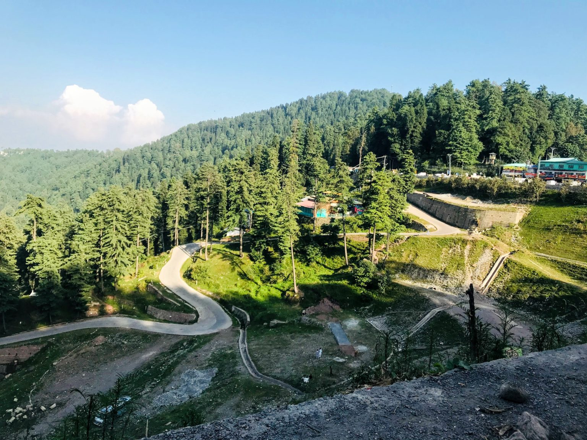

|
Murree:
|
Muree is a popular hill station and tourist destination located in the Punjab province of Pakistan. It is situated in the Pir Panjal Range within the Himalayas, approximately 60 kilometers northeast of the capital city, Islamabad. Murree is known for its pleasant climate, scenic beauty, and lush green hills. It is a favored retreat for both local residents and tourists, particularly during the summer months when people seek respite from the heat in the plains. The town of Murree is situated at an elevation of around 2,291 meters (7,516 feet) above sea level, offering breathtaking views of the surrounding mountains and valleys. The area is adorned with thick forests, including pine, oak, and cedar trees, which contribute to its natural charm. One of the most famous attractions in Murree is Mall Road, a bustling street lined with shops, restaurants, and hotels. Visitors can take leisurely walks along Mall Road, enjoy local cuisine, and purchase traditional handicrafts and souvenirs. Murree also offers various outdoor activities and recreational opportunities. Visitors can go hiking in the nearby hills, take chairlift rides to get panoramic views, or visit nearby picnic spots such as Pindi Point, Kashmir Point, and Patriata (New Murree). Additionally, the scenic beauty of Murree has attracted filmmakers, and the town has been a popular shooting location for Pakistani films and dramas. The hill station has a range of accommodations, from luxury resorts to budget hotels, to cater to the needs of different travelers. During peak tourist seasons, Murree can get crowded, especially on weekends and public holidays. It's important to note that due to its popularity as a tourist destination, the infrastructure in Murree has been developed to accommodate the influx of visitors. However, it's always advisable to check weather conditions, plan your visit accordingly, and follow any guidelines or advisories provided by local authorities. |
 |